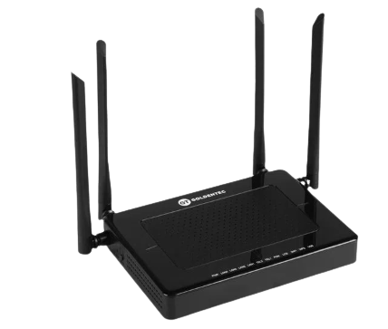

_________________________________
Código Produto: 40539

► Suporta gerenciamento remoto de OMCI
► Distância máxima de transmissão de 20 km
► Taxa de downstream máxima de 2,5Gbps e upstream máxima de 1,25Gbps
► Porta LAN Gigabit Ethernet
► Compatível com os padrões IEEE 802.3, IEEE 802.3u, IEEE 802.3ab, IEEE 802.3ah, ITU G.9 84.1, ITU G.984.2, ITU G.984.3 e ITU G.9 84.4
_________________________________
Código Produto: 42752

► 2 antenas de 5dBi
► Distância máxima de transmissão de 20 km
► Taxa de downstream máxima de 2,5Gbps e upstream máxima de 1,25Gbps
► Interoperabilidade com as OLTs mais difundidas do mercado
► Distância máxima de transmissão de 20 km
► Suporta gerenciamento remoto de OMCI + TR069
_________________________________
Código Produto: 42222
► 4 antenas
► Wifi AC dual Band
► Taxa de downstream máxima de 2,5Gbps e upstream máxima de 1,25Gbps
► Interoperabilidade com as OLTs mais difundidas do mercado
► Suporta gerenciamento remoto de OMCI + TR069
► 4 portas de conexão Giga Ethernet e 2 portas FXS